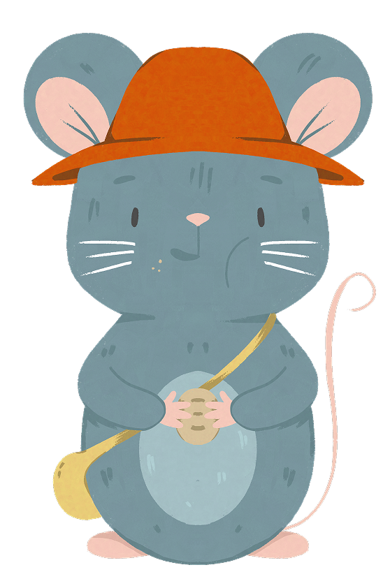

Ahora Pancho puede acercarse
y encuentra el pan.
Come tranquilo y sin miedo.
y encuentra el pan.
Come tranquilo y sin miedo.
Muchos animales viven cerca de
nosotros, y lo que dejamos en el
suelo también afecta su mundo
nosotros, y lo que dejamos en el
suelo también afecta su mundo
